NOTICIA
Amazon LEO: internet desde el espacio
La noticia destacada de nuestra comunidad tecnológica.
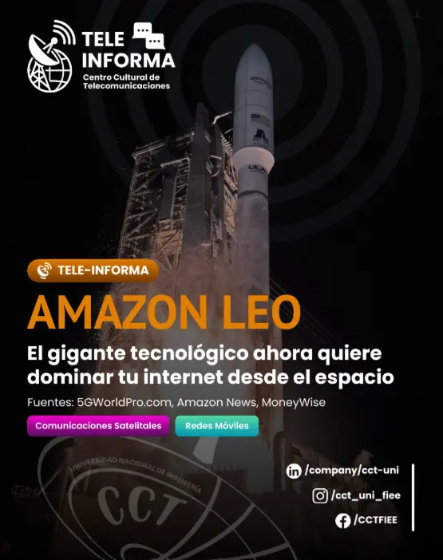
Únete al equipo que impulsa la comunidad de telecomunicaciones en la UNI. Participa en cursos, eventos y proyectos.
Somos la principal organización estudiantil de telecomunicaciones en el Perú. Creamos el puente entre la universidad y tu futuro profesional.
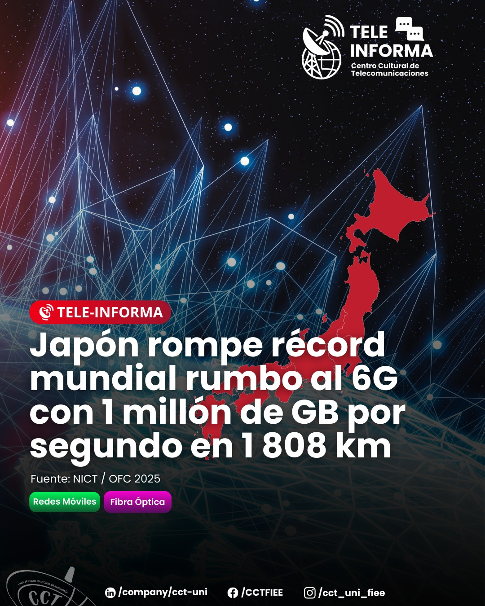
Telecomunicaciones no es solo “internet”. Es diseñar la ruta que permite que una voz, una imagen o un dato viaje desde un teléfono hasta cualquier lugar del planeta.
Selecciona un campo para explorarlo.
Noticias, cursos, convocatorias y eventos en un solo recorrido visual.
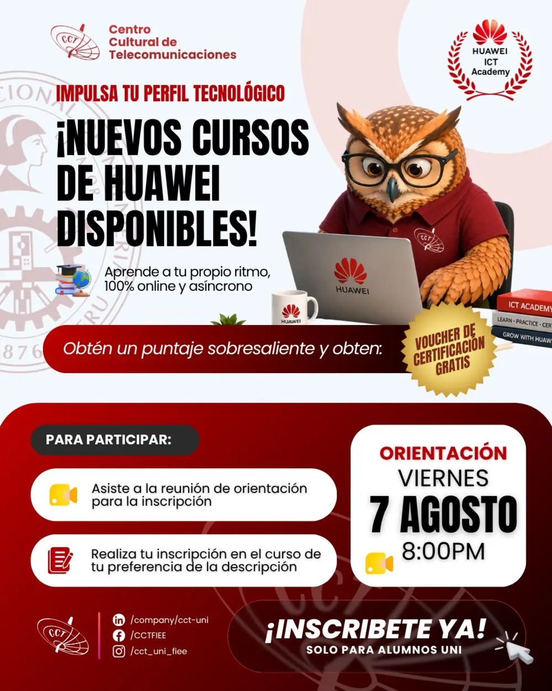
Formación online y asíncrona para seguir impulsando tu perfil tecnológico.
Ver formación →La noticia destacada de nuestra comunidad tecnológica.

Una fecha para reconocer nuestra historia, cultura y esfuerzo.
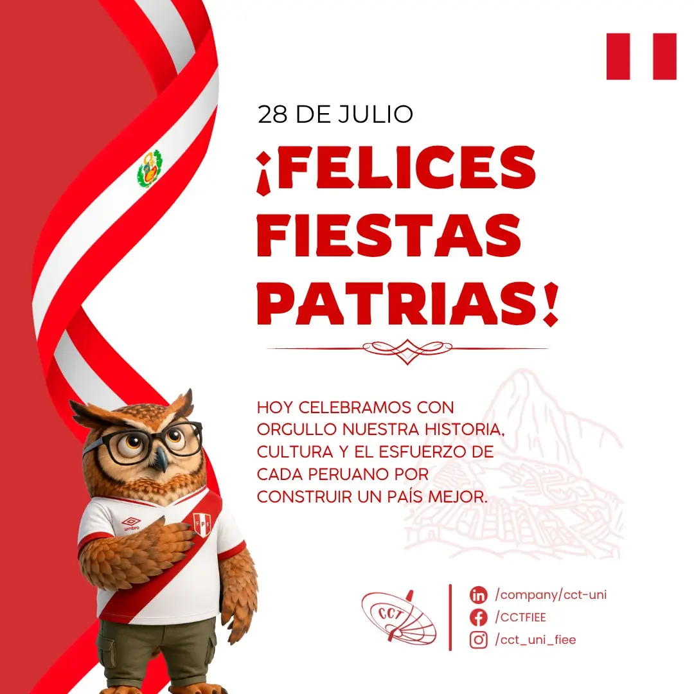
Cuando el CCT confirme un evento, aparecerá aquí sin dejar espacios vacíos en la página.
La interfaz ya separa publicaciones y eventos; después solo se añade el calendario público del CCT para actualizar fechas automáticamente.
Estudiantes que aprenden, comparten y abren camino para la siguiente generación de telecomunicaciones.
Conócenos ↓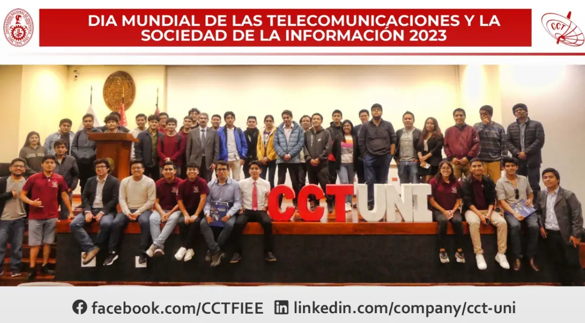
Comunidad CCT · FIEE UNIEl CCT complementa la vida universitaria con formación técnica, eventos, proyectos y espacios de encuentro. Aquí, cada estudiante puede aprender de quienes ya recorrieron el camino y también enseñar a quien viene detrás.
El Centro Cultural de Telecomunicaciones (CCT) es la organización estudiantil más importante de la Facultad de Ingeniería Eléctrica y Electrónica de la Universidad Nacional de Ingeniería.
Desde nuestra fundación, hemos trabajado incansablemente para promover el desarrollo académico, profesional y personal de los estudiantes de telecomunicaciones. A través de cursos, talleres, charlas magistrales, eventos y proyectos, creamos oportunidades que complementan la formación universitaria.
Equipo directivo del CCT-UNI para el periodo 2026.
💡 Haz clic en cualquier tarjeta para conocer el área y cómo unirte.
Organizamos TELCON, el congreso nacional de telecomunicaciones más importante del país, y mantenemos alianzas estratégicas con empresas líderes como Cisco, Huawei, y otras organizaciones del sector tecnológico.
Cuando abrimos una convocatoria, la publicamos aquí y en nuestras redes.
Conoce las áreas, elige dónde aportar y registra tu interés.
Responsable: Jorge Cordova M. / Johann Rios S.
Planificación, coordinación general, representación institucional.
Responsable: Fernando Flores Q.
Actas, organización interna, seguimiento de acuerdos y logística.
Responsable: Alexandra Cornejo Q.
Alianzas, comunicaciones externas, entrevistas y coordinación.
Responsable: Eliane Antara G.
Presupuesto, control de gastos, informes y gestión financiera.
Responsable: Kevin Huaripata C.
Diseño de campañas, contenido, branding y difusión digital.
Responsable: Patrick Vela C.
Plan académico, apoyo a cursos, materiales y coordinación académica.
Responsable: Andy Reyna S.
Capacitaciones, talleres técnicos, rutas de aprendizaje.
Responsable: María Evangelista A.
Proyectos, innovación, investigación aplicada y reportes.
Responsable: Juan Pizarro E.
Gestión de NetAcad, coordinación de cohorts, soporte académico.
Promover el desarrollo integral de los estudiantes de telecomunicaciones a través de actividades académicas, culturales y profesionales que complementen su formación universitaria y los preparen para ser líderes en el sector tecnológico.
Ser el centro cultural estudiantil líder en América Latina, reconocido por la excelencia de sus programas de formación, la calidad de sus eventos y el impacto de sus egresados en la industria de las telecomunicaciones.
Rutas técnicas, academias reconocidas y cursos creados por la comunidad CCT.
Selecciona una certificación para revisar la ruta y registrar tu interés.
Fundamentos de redes, direccionamiento y switching inicial.
VLAN, routing, wireless y prácticas guiadas de laboratorio.
Redes empresariales, seguridad y automatización.
Operación y defensa de redes con el ecosistema Fortinet.
Ruta profesional para infraestructura y operaciones de seguridad.
Arrastra, usa las flechas o pasa el cursor para detener el recorrido.
Cada curso abre su aula en una pestaña nueva, con módulos, duración, nivel y recursos organizados.
Reconoce amenazas, protege endpoints y desarrolla una primera ruta profesional en seguridad.
Monitorea, analiza y responde a incidentes con una visión aplicada de operaciones SOC.
Comprende vulnerabilidades y aprende una metodología responsable de evaluación de seguridad.
Una carrera se estudia. Una comunidad se vive.
Una selección editorial; no un muro infinito de publicaciones.
Teleinforma traduce los cambios tecnológicos que están transformando la industria y nuestra carrera.
Ver publicación en Instagram ↗Visitas técnicas, eventos, certificaciones y momentos que solo existen porque hay personas detrás.
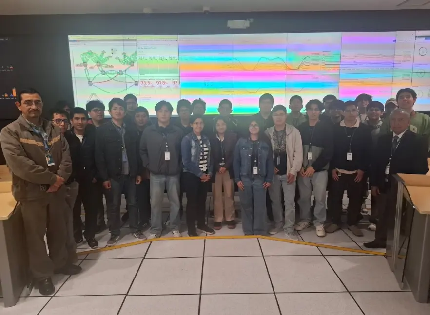
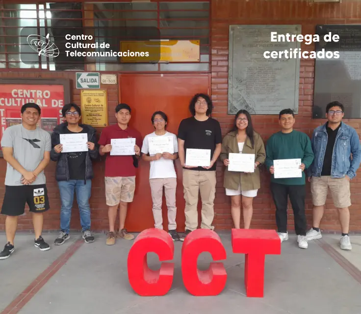
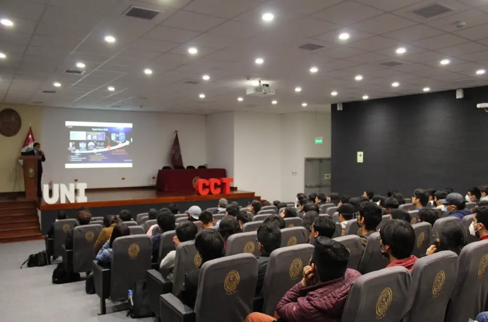
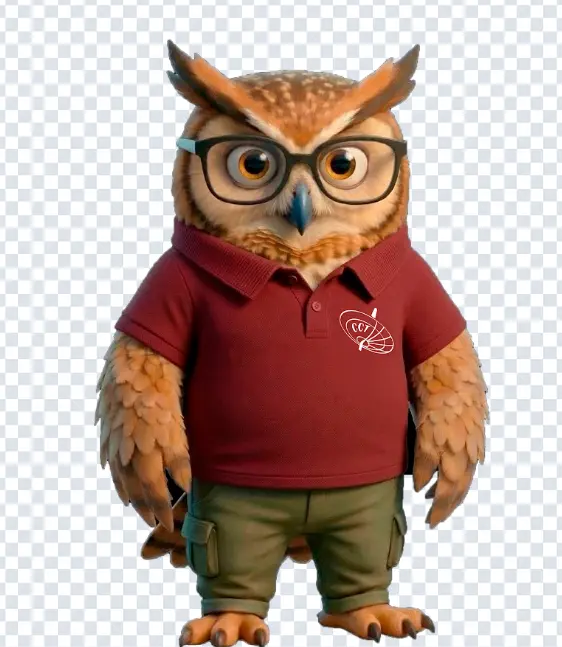
VOCES CCTEntrevistas breves con egresados, estudiantes destacados y docentes: decisiones, errores, oportunidades y consejos para quienes recién empiezan.
Charlas, ferias y encuentros que convierten conocimiento en experiencia.
Este espacio se activa únicamente cuando exista un evento confirmado.
Evitar mostrar fechas inventadas o eventos vencidos mantiene esta sección clara y confiable.
Revisar novedades en Instagram ↗En lugar de un mes lleno de casillas vacías, la agenda avanza por hitos confirmados.
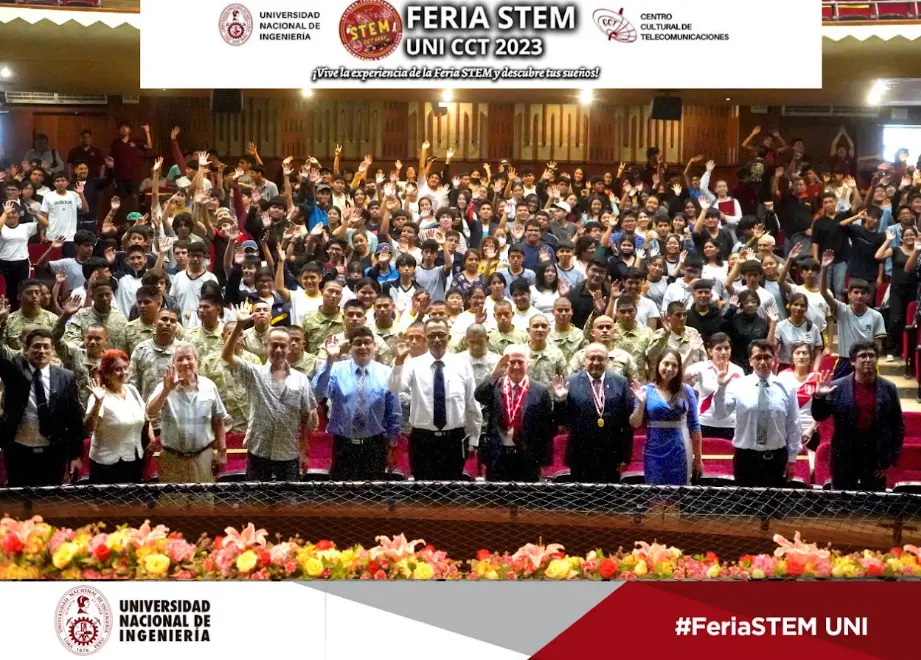
Una jornada para descubrir tecnología, ciencia y vocación.
La comunidad reunida para celebrar la carrera y su impacto.
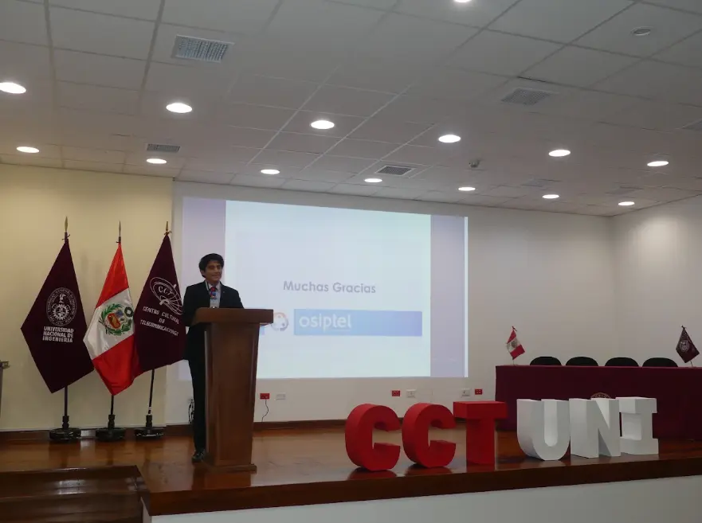
Especialistas, instituciones y estudiantes compartiendo un mismo escenario.
El cierre de una ruta y el inicio de la siguiente.
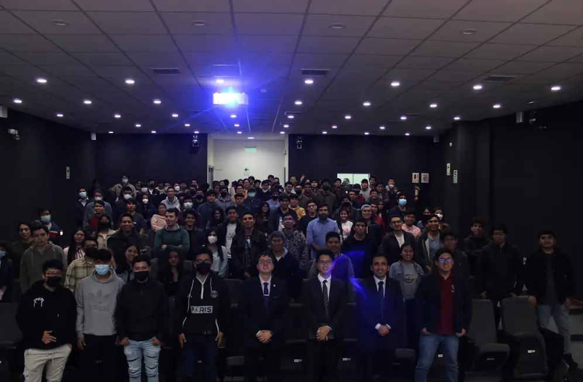
15 - 17 de Marzo, 2026 | Lima, Perú
TELCON es el congreso nacional de telecomunicaciones más importante del Perú, organizado anualmente por el CCT-UNI. Durante tres días, reúne a estudiantes, profesionales y líderes de la industria.
Inscríbete ahora y asegura tu lugar en el evento más importante del año.
Estudiantes universitarios, técnicos y profesionales del sector.
Sí, ofrecemos descuentos early bird y para grupos de 5+ personas.
Todos los participantes reciben certificado digital de asistencia.
Deja tus datos y te enviamos el enlace oficial de registro y las bases actualizadas.
Busca por ciclo o por nombre de curso. Cada materia abre directamente su propia carpeta académica en Drive.
Navega por los ciclos dentro de la página. Drive se abre únicamente cuando eliges una materia.
Selecciona un ciclo y luego abre la carpeta específica de tu curso.
Elige un ciclo o tipo de recurso para ver el contenido disponible.
Selecciona un ciclo para ver las materias disponibles.